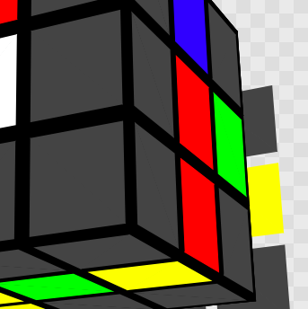
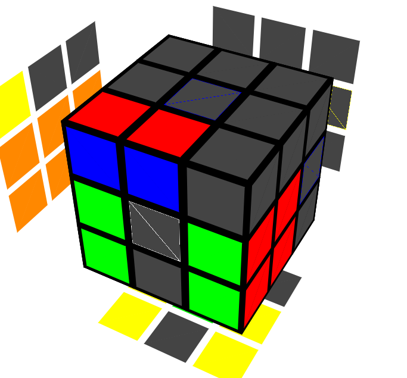
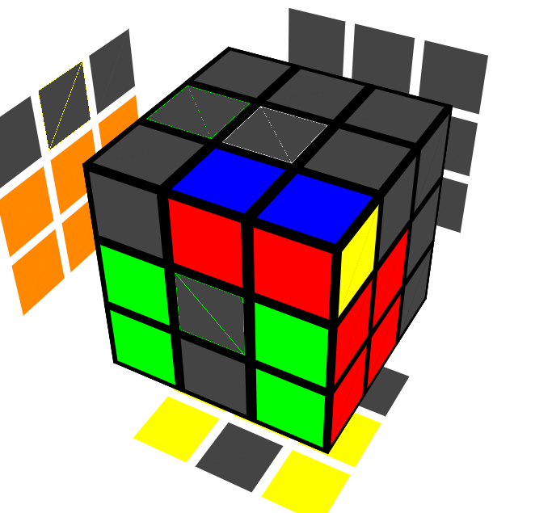
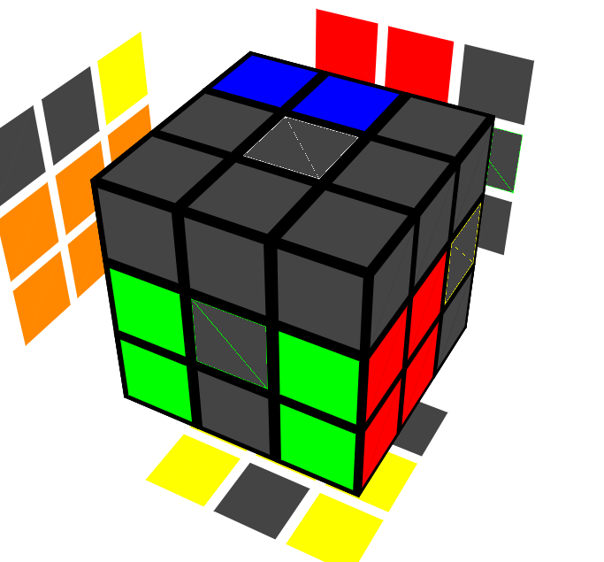
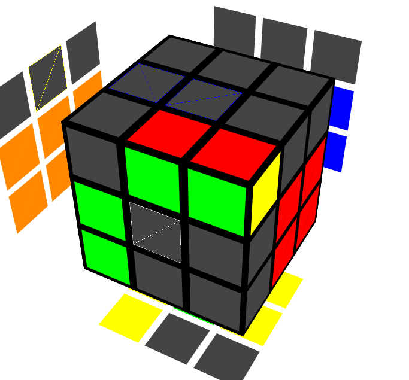
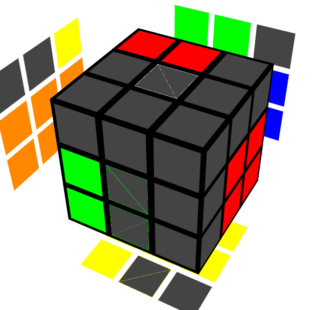
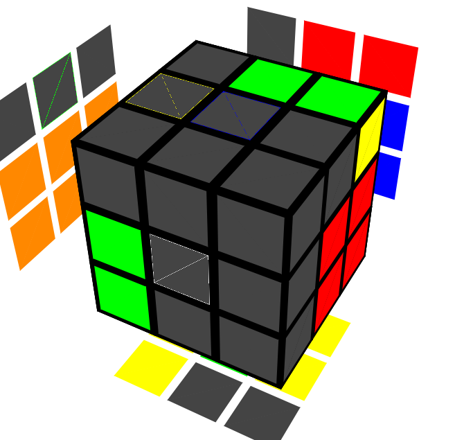
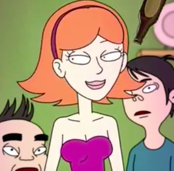

RICK: Alright Morty, y-y-you got the first block, so now w-w-we gotta get
a block just like that on the other side of the cube. I-i-it's got a really
clever name, Morty, it's- *burp* it's really the m-most amazing name I've
seen yet Morty. Y-y-you wanna know what it's called Morty?
MORTY: O-o-oh-ohhh is it called Jessica's boobs, Rick? I-i-i don't think
I c-c-could conceive of a name more a-a-a-amazing than that! *swoon*
RICK: Y-yeah Morty, th-th-ankfully y-y-you probably won't conceive of a-anything
else in your lifetime either *burp*. Nono Morty, it's-it's called the
"second block", Morty! I-i-isn't that brilliant Morty? And o-o-oof all the
possible names th-they could've chosen Morty! It's-it's-it's a stroke of
genius Morty! Th-that one French guy that made this solving method
re-*burp*-really knocked it out of the park with this one Morty!
RICK: O-o-okay Morty, i-it's just like last time, w-w-we gotta build a
square first. Th-there's a twist now though, since y-y-you don't wanna
break your first block: y-you can only use the move set <R,r,U,M>
to get the corner and edge into position.
MORTY: Oh-oh no Rick, th-the move sets a-are getting more and more
restricted!
RICK: Y-y-yeah Morty, that's because you're solving more and more of the
cube. E-e-eventually you'll only be able to turn <M,U>.
MORTY: O-o-oh wow Rick th-that's r-r-really restricted!
RICK: Y-y-yeah that's wh-what makes the m-m-ethod fast, Morty. I-it's
called ergonomics; y-you got less things to turn, s-s-o it's easier
to turn the things faster Morty!
MORTY: B-b-b-but Rick, isn't the square a lot harder to make now?
RICK: N-not if you know what you'e doing, Morty. *drink* Y-y-you first
wanna solve th-the DR edge, like this:

Th-then y-you wanna use M slice pairing l-like the Meeseeks showed you
for the first block t-to pair up th-the corner and edge that n-n-eed to be
attached t-to the back of the DR edge to make the square--only this
time, y-you can only use <R,r,U,M> to get the corner and edge into
position. D-d-depending on where the pair got formed, *burp* here's how
you want to insert it:
| Pair location | UFL:  | UFR:  | UBL:  | UBR: |
| Algorithm | U2 r' U' r | U2 R' U R | R' U R | r' U' r |
| Pair location | UFL:  |
UFR:  | UBL:  | UBR:  | Jessica's chest:  |
| Algorithm | R U' R | r U r' | U2 r U r' | U2 R U' R | s t o p b e i n g a w u s s |
MORTY: H-h-hey, that's not funny Rick!
RICK: *drink* y-y-yeah yeah Morty, m-m-maybe you should grow a pair of
y-your own a-a-and do something about it.
MORTY: Y-y-y-you know what Rick, you're right. I-i-im done with y-y-you
and y-y-uour-*pew*
RICK: *retracts stun gun* Well that about wraps up the second block!
Th-that's all we got for now! I-i-i-it's over, see you on the
next page! Th-th-this is the end of step
twoooooo! Th-there's nothing else here!
W-w-w-we're all out o-of stuff t-t-t-to show o-on this page! Th-there's
zero i-i-information left to present! Y-y-you
best be m-m-ving on to the n-n-next page! S-s-see you on the next page!
Th-th-ere's nothing more to see here!
We-we-we're allll out! And th-that's the
waaaaaaaay the news goes! ahahahahaaaaaaaa!
wubbalubbadubduuuuuuub! l-l-l-li-li-lick ma' buuuuuuuutt!
Credits: Images thanks to alg.cubing.net. Genius of Rick and Morty thanks to God (RIP, God. You did good.).